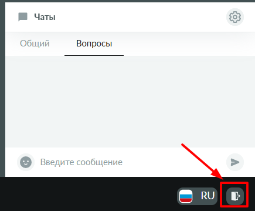
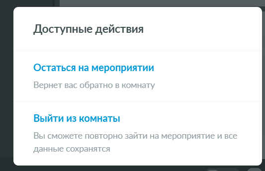

Выход из вебинара
12
Завершение участия
Чтобы выйти из вебинара, вам необходимо найти значок «Дверь» и нажать на него.

Значок «Дверь» в интерфейсе виртуальной комнаты
Далее выберите нужный вариант:

Диалог подтверждения выхода
Ваш вебинар завершён.